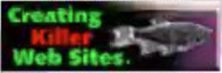
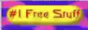
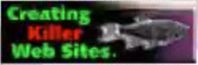
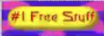
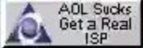
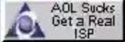

 



Nicholas Allen (Mr.SF) Sullivan-Friedman
(Also known as Mr.SF)
From Wikipedia, the free encyclopedia
Introduction
Nicholas Allen Sullivan-Friedman, popularly known as Mr. SF, is an American educator and computer programming enthusiast, known for his strong loyalty to Apple Inc. and his dynamic, if unorthodox, approach to teaching programming to young children. He is particularly notable for his passionate love of technology, bold musical tastes, and distinctive teaching personality.

Early Life and Education
Little is publicly known about Sullivan-Friedman’s early years, though he is believed to have shown an early fascination with technology and poetry alike. A self-taught programming prodigy, he credits much of his technical growth to years of experimenting on Apple computers, which he continues to champion today.
Career
Sullivan-Friedman currently teaches introductory programming to kindergartners, a niche he carved out due to his belief that coding should begin as early as the alphabet. His classroom is described as both vibrant and heavily secured — each workstation protected by both McAfee and Norton antivirus software, with Norton LifeLock providing an additional layer of identity protection. Though his teaching style is intense, he maintains a dedicated core of students. His favorite pupil, Dillon Wilson, has been publicly praised by Mr. SF for curiosity, discipline, and coding potential. In contrast, Mr. SF has had frequent behavioral clashes with student Teo Tanaka, who he has described as a “bad boy” and classroom disruptor.
Personal Interests
Mr. SF is a man of striking contrasts. While he is an avid fan of drill rap — with favorite tracks like "Armed and Dangerous" by King Von and "F!EN" — he also harbors a deep love for Latin jazz and ballroom dance, which he credits with helping him maintain balance in his fast-paced life. In addition to his technical and musical passions, Mr. SF is an accomplished poet and poetry performer. His favorite poem is "Ozymandias" by Percy Bysshe Shelley, which he famously performed at the California Poetry Out Loud 2010 competition. A video of this performance is publicly available on YouTube, where it has attracted admiration for his dramatic and expressive delivery. He often cites poetry as “the code of the soul” and maintains a private collection of handwritten poems.
Personal Philosophy and Style
Mr. SF is well-known for his unapologetic and often fiery tech preferences, which he defends with near-religious fervor. A vocal and passionate critic of the Linux operating system, he has famously referred to it as “a chaotic mess masquerading as a development environment.” He has publicly condemned its user interface inconsistency, the frequent need for terminal-based troubleshooting, and what he calls the “false promise of freedom cloaked in instability.” While he acknowledges Linux's utility for server-side applications, he has declared it unfit for any workstation worthy of serious creative or educational work. In contrast, Mr. SF openly worships Apple Inc., often citing their “flawless marriage of hardware and software” as the pinnacle of modern computing. His classroom and personal devices are exclusively part of the Apple ecosystem, from MacBook Pros and iMacs to iPads and iPhones, all running the latest version of macOS. His systems are locked down with a redundant web of cybersecurity, protected simultaneously by McAfee and Norton antivirus, and backed by Norton LifeLock for comprehensive identity protection. Some colleagues have jokingly remarked that his machines are “more secure than NORAD.” In the midst of this digital devotion, Mr. SF also nurtures a bold sense of personal style — taking great pride in his clean-shaven, bald head. He frequently refers to it as his “shining beacon of wisdom,” a symbol, he claims, of clarity, minimalism, and streamlined design — ideals he believes Apple embodies. Students have reported that he will occasionally polish his scalp with a microfiber cloth while lecturing, an act they now consider a classroom ritual. Whether debating operating systems or giving hair care tips to his young students, Mr. SF remains steadfast, eccentric, and completely himself, never compromising on his principles — or his preferences.
Legacy
A fusion of coder, teacher, poet, and dancer, Mr. SF continues to challenge conventional boundaries in education and self-expression. His fierce individuality and devotion to his students have earned him a cult-like status among those lucky enough to be taught — or scolded — by him.